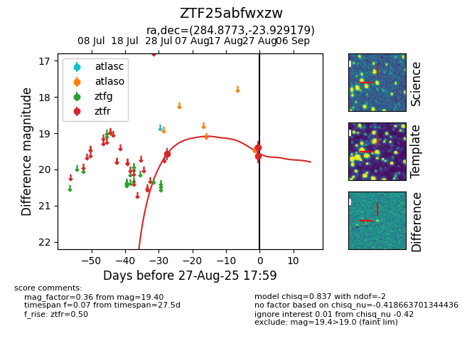

Target ZTF25abfwxzw at 2025-08-27 06:37, see:
FINK: fink-portal.org/ZTF25abfwxzw
Lasair: lasair-ztf.lsst.ac.uk/objects/ZTF25abfwxzw
ALeRCE: alerce.online/object/ZTF25abfwxzw
alt names
ZTF25abfwxzw (ztf,fink)
coordinates:
equatorial (ra, dec) = (284.8773,-23.92918)
galactic (l, b) = (12.1697,-12.33300)
photometry
last ztfr=19.40
3 ztfr detections
